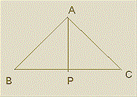

Solution to Exercises
Solutions to the exercises in geometry :
- In a triangle ABC if AB=sqrt(10)-sqrt(5), AC=sqrt(6) and BC=sqrt(18)-1,
find the altitude from A onto BC.

- Let P be the foot of the perpendicular from A onto BC.
- Let BP = x and PC = y.
- Then, we have by Pythagoras theorem,
x2 + p2 = 15-10sqrt(2), and
y2 + p2 = 6.
- Therefore, y2 - x2 = 10sqrt(2) - 9.
(y + x)(y - x) = 10sqrt(2) - 9
(sqrt(18) - 1)(y - x) = 10sqrt(2) - 9
y - x = (10sqrt(2) - 9)/(3sqrt(2) - 1)
y - x = (51 - 17sqrt(2)) / 17 ( after rationalisation of the denominator)
y - x = 3 - sqrt(2).
- Now, y+x = 3sqrt(2)-1. Therefore
y = 1 + sqrt(2).
Therefore, p2 = 3 - 2sqrt(2)
p2 = (sqrt(2)+1)2
p = sqrt(2)+1.
- Prove that area of a triangle = abc/4R.
- Area of Triangle ABC
= 1/2 * a * p, where a is the length of BC, the side opposite angle A.
- Since ACD and M'MP are similar,
AC/M'M = AD/M'P
b/2R = p/c.
- Therefore p=bc/2R.
Hence area =1/2 * a * p
= (1/2) * a * (bc /2R) = abc/4R.
- Derive the formula (a / sin A) = (b / sin B) = (c / sin C) = 2R
- sin B = p / c ; sin C = p / b
- Hence we get, p = c sin B = b sin C
- Similarly, using the other altitudes of the triangle, we get a sinC = c sinA and b sinA=a sinB.
- Hence,
a/sinA = b/sinB = c/sinC. ----------(I)
- From the right triangle M'MP we have,
M'P/M'M = sin(M'MP). ----------(II)
- Since ACD and M'MP are similar,
angle(M'MP) = C.
- Therefore M'P = AB = c.
- Hence from I & II, we get
a/sinA = b/sinB = c/sinC = 2R.
- Express a1a3+a2a4 in terms of the diagonals of a cyclic quadrilateral, where a1, a2, a3, a4 are the sides of the cyclic quadrilateral.
The diagonals of a cyclic quadrilateral can be written in terms of the sides as,
(d13)2 = (a1a2+a3a4 )(a1a3+a2a4 )/(a1a4+a2a3) -------(I)
(d24)2 = (a1a3+a2a4)(a1a4+a2a3)/(a1a2+a3a4) -------(II)
Multiplying I & II, we get
(d13)2*(d24)2 = (a1a3+a2a4)2
Therefore a1a3+a2a4 = d13.d24. ----------(III)
Statement III is known as Ptolemy's theorem.